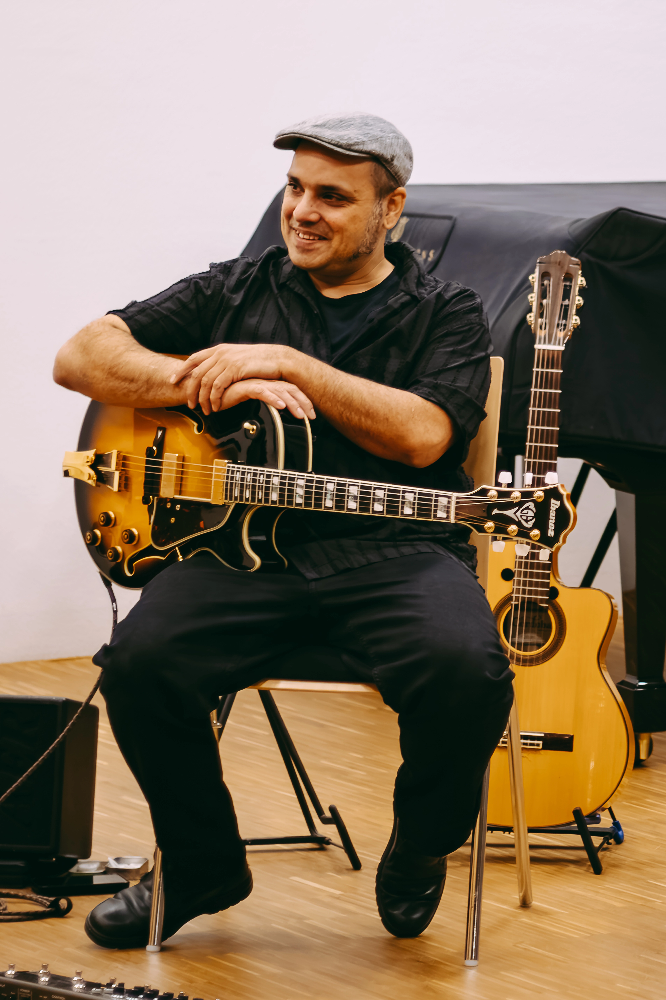

Gitarre & Komposition
Rehan Syed, 1971 in München geboren, kommt aus einer deutsch-pakistanischen Familie. Als Kind wuchs er mit indischer und arabischer Musik seines Vaters sowie klassischen Eindrücken durch seine Mutter auf. Schon mit 8 Jahren schrieb er eigene Lieder — die Leidenschaft für Musik war früh klar. Nach einer Reise durch viele Stile und Instrumente fand er in der Gitarre sein Medium.
Im Studium begeisterte ihn die Verbindung von Jazz und Folklore, besonders orientalische Musik, Tango und lateinamerikanische Stile. Seine größte Leidenschaft gilt dem Gypsy Jazz, den er intensiv studierte und in mehreren Formationen weiterentwickelte.
In seinen Kompositionen verbinden sich orientalische und lateinamerikanische Einflüsse auf einzigartige Weise. Regelmäßig wird er zu Festivals für Jazz, Gypsy Jazz und Weltmusik eingeladen.